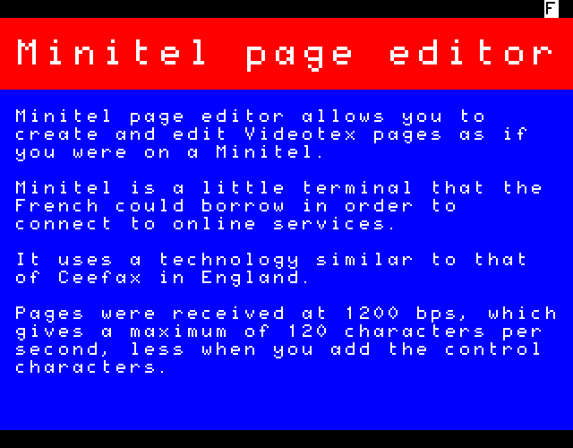

No need to install anything on your computer, Minitel page editor only requires a modern browser supporting Canvas and ES6 (JavaScript 2015).
If you meet the requirements, you can already start drawing!
Create a new page
Manage your pages
Minitel page editor comes with a viewer so that you can share your creations with the world. It can be found under the "file" tab.
Here are some examples: